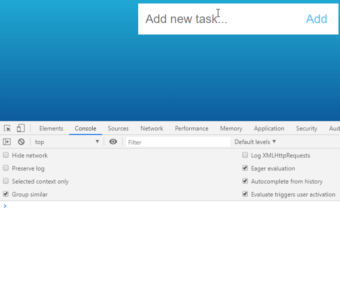

In order to create our app we will need to execute following steps:
In order to create our app we will:
Update index.html code:
<div class="app">
<form onsubmit="return false" action="#">
<input type="text" name="task" id="task" placeholder="Add new task...">
<input type="submit" id="add" value="Add">
</form>
<div id="todos">
<ul id="list">
</ul>
</div>
</div>
Now let's do some small cleanup in JS, instead of concatenating our new list item inside the function:
document.getElementById('list').insertAdjacentHTML('beforeend', "<li class='task'>" + task + "</li>")
let's make it more readable and split it in 2 steps:
const text = "<li class='task'>" + task + "</li>"
document.getElementById('list').insertAdjacentHTML('beforeend', text)
We want to make sure that we won't add tasks with empty name:
if (!task)
return;
This condition, checks whether task, isn't an empty value. In case it is, it will return 0, therefore we are adding ! sign in front which revert logic:
Finally, once we add new item to the list, we want to clear our input area:
document.getElementById('task').value = '';
The final scripts.js code after cleanup:
function addTask() {
let task = document.getElementById('task').value;
if (!task)
return;
const text = "<li class='task'>" + task + "</li>"
document.getElementById('list').insertAdjacentHTML('beforeend', text)
document.getElementById('task').value = '';
}
document.getElementById('add').addEventListener('click', addTask);
html{
height: 100%;
background-image: linear-gradient(#20a9d3,#0d5c9c);
background-repeat: no-repeat;
font-family: sans-serif;
color: #0f222d;
background-size: auto;
}
.app{
width: 400px;
display: flex;
justify-content: center;
flex-direction: column;
margin: auto;
}
h1{
text-align: center;
color: #fff;
}
form{
background-color: #fff;
padding: 15px;
}
input[type="text"]{
width: 310px;
height: 30px;
outline: 0;
border: none;
font-size: 1.5em;
background: #fff;
color: #2f4f4f;
}
input[type="submit"]{
font-size: 1.5em;
color: #53BDFF;
background-color: #fff;
outline: 0;
border: none;
width: 50px;
}
.todos{
background-color: #fff;
margin-top: 20px;
padding-top: 10px;
padding-bottom: 10px;
padding-right: 40px;
}
ul{
list-style: none;
}
li{
border-bottom: 1px solid #53BDFF;
padding-bottom: 15px;
padding-top: 15px;
font-size: 1.3em;
color: #ffffff;
cursor: pointer;
}
.done {
text-decoration: line-through;
color: #104123;
cursor: pointer;
}
Now we have to mark our tasks as done. In order to do that we will add or remove class done to the item when someone clicks on it.
Add new listener:
document.getElementById('list').addEventListener('click', function(event){
const element = event.target;
console.log(element);
});
Now we can check console to verify if we are catching correct element.
As you can notice - we are passing a click event to our function, and assigning it's target (so element which was clicked) to constant variable called element
Since we have our element assign, the last thing we have to do is to toggle done class:
document.getElementById('list').addEventListener('click', function(event){
const element = event.target;
element.classList.toggle("done");
});
Voila! Our code is ready.
There are few more enhancements which we could provide to our app like:
Try to write this functionality yourself and if you want to see final solution, don't miss next tutorial!